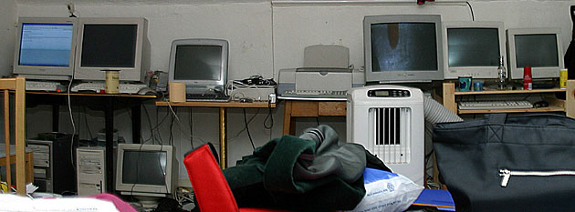
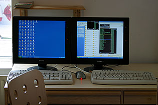
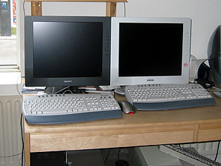
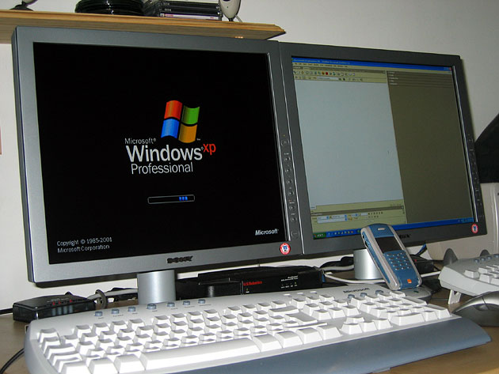

The Sony monitor experience A story about Sony support and my lessons learned. Maybe it will provide hope for those in a similar position. Ok, so let me explain, in May I decided it was
time to ditch all of my CRT monitors, there were six in varying
sizes that ended up taking up just far too much space. So after
giving most of them away I came to the conclusion I wanted dual
Sony SDM-P82s, I know I could have gotten one 23" apple
but, I need to hook up a lot of machines, so dual 18" is better,
but there were none in stock anywhere, expect for Selfridges and
that was ex-demo. Now, I'm very impatient so I decided
on two Sony SDM-X82s - the cool thing about these monitors is
that they have three inputs each so I can hook up six machines,
or five and one dual monitor setup. This is a space saving on
its own, not even mentioning the fact that the X82s are quite
slim anyway. Well off to Tottenham Court Road. First problem:
everywhere is sold out, except for one shop. Fine, I buy that
and have to wait for a few days for the second one. A few days
later back I go, this time to Shasonic and
picked up the other (for a slightly inflated price) |
||
|  | ||
| The messy old multi monitor setup. Look at the size of the 21" SGI :-) | ||
So far so good, and for a month and a few days all was well. Then suddenly monitor two refused to display anything, hmm, weird I thought: maybe it had just overheated, as when I felt the back it was very hot, so I left it to cool. No, when I turned it on again, the screen was garbled and cut out. Ok, Shasonic would surely give me a new one, it was only a month old after all? No hope of that, they just referred me to Sony. My first advice: Lesson one: Avoid Shasonic, they are unhelpful and rude. |
 | |
| The first two black Sony SDM-X82s. | ||
 |
Not pleased I phoned Sony, who in all honesty were pretty helpful, they arranged a replacement monitor, although they only had white available. They delivered it next day and collected the faulty one. I asked repeatedly whether I could just have a new black one, as a month seemed a short time to own the monitor, but apparently the best they could do was a repair. Fast forward four, maybe five weeks. During this time I had to put up with different coloured monitors, and although no guests commented on it, well, one black and one white, tsk, the embarrassment! |
|
Black and white monitors together. |
||
Back to the story, I get a call, monitor is fixed, can I be in on Monday to collect it? Ok, Monday comes and I make sure I'm at home, the delivery guys come, drop of the monitor and ask for the white one back, I've already unplugged everything, but here is Lesson number two: Always check the repaired item before you accept it. I learned this when Dixons took my very expensive DV cam away and sent it back even more broken, this was a few years ago, yes I was young and foolish I would never shop at Dixons again. I insist I check the repaired one first. The guys seem miffed and complain that they have other deliveries to make, but thank goodness I plugged in the repaired monitor. Analogue one, fine, analogue two, fine, DVI input, nothing, ok I reboot the machine, hmmm still nothing. So I unplug the DVI from monitor one, try that, nothing. So Sony have managed to fix analogue and leave the DVI broken, erm, ok, so back downstairs I grab the white monitor, and tell the delivery guys the situation. They let me sign saying unacceptable, and I keep the white monitor. Next: straight on the phone to Sony. The poor woman who works at the monitor call centre, (their only employee by all signs) can't help so I get to speak to a more senior person, and am told that she will phone me back that day. I wait and nothing happens. Now, I'm usually pretty mild-mannered but I am starting to get a bit upset about spending about £1300 on two monitors and then finding all this hassle. Next day the Sony woman rings - now I know that she's only doing her job, but she is quite blunt and very sure I cannot get a refund or have a new monitor, the best I can get is mine repaired. Lesson three: do not give in when companies tell you NO. I'm irritated and I let her know so - it's not her fault but I am not happy with the options they give me. Eventually she says there is something she can do: convene some mystical group of heads of Sony to do something about it. (Erm, not sure I believe that bit but anyway, that's what she told me). I agree to this as there is no way I will accept the other alternatives. One week passes, in this time I go around professing my hatred of Sony support. Then, checking my messages, there's a missed call. Ah ha, a solution! They can't get me an X82, none in stock, but they can send me a brand new SDM-P82, better looking and more expensive.
|
||
|  | ||
| The final setup, very exciting eh? | ||
I call this a success, and surely the best I'm going to get. After arranging the delivery time I smile. A few days later, the SDM-P82 arrives, and now I am in a predicament: I want dual monitors and I want them to match. So, off to Tottenham Court Road again, I buy another P82 and bring it home. Now my desk looks great, I have matching flat panels again and the only downer is that I have a spare X82. I did think I would be able to use it as the monitor for my new G5 when I buy it (I have this planned to replace my aging Mac) but when I put all three on my desk it just looked weird, and anyway, you can't run a Mac with a PC monitor, it just looks freaky. So, if anyone wants an immaculate Sony SDM-X82 for a very knocked down price, say £500, then please contact me. I want to keep it, but I just don't have anywhere for it to go. Additions to story added 12/10/03 After writing of my experiences I was contacted by David Burton who had also had an identical problem with his X82, he let me know he also received a P82 as a replacement so if anyone is in the same spot as we both were, there definitely is hope. :-) Also after this and the AIBO head incident it seems
I'm not alone in having Sony
problems. |
||